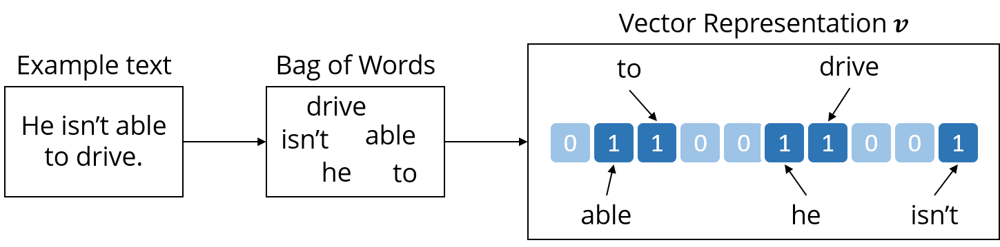
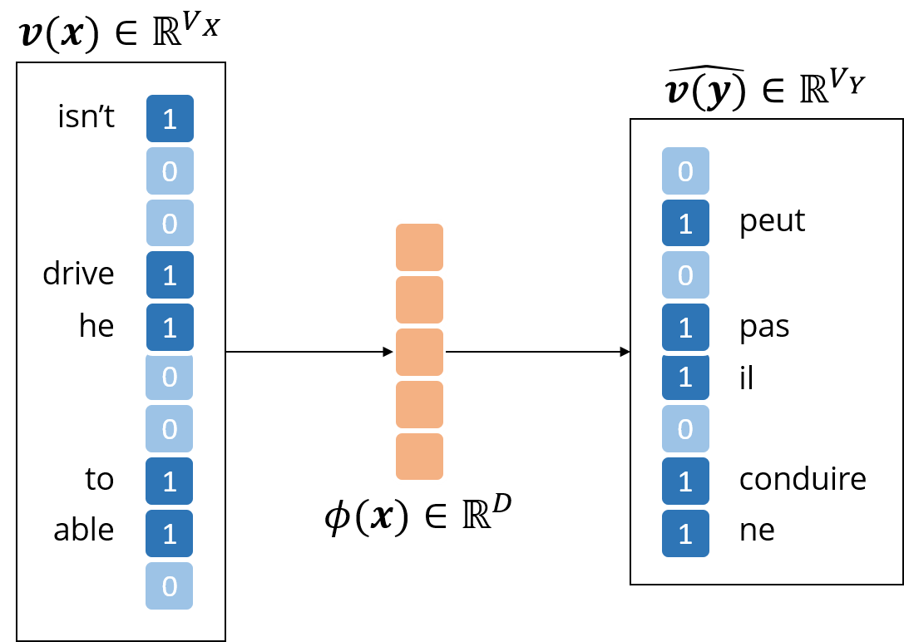

. The decoder function is trained using a loss function that
measures how well we are able to reconstruct x. [1]
. The decoder function is trained using a loss function that
measures how well we are able to reconstruct x. [1]
We assume a method for representing words in a vector in ℝD exists. Methods for achieving this are discussed on other pages. We also assume a vocabulary of words, size V .
Given a sentence or phrase, we produce a representation by a simple additive method, which is as follows:
. The decoder function is trained using a loss function that
measures how well we are able to reconstruct x. [1]Concrete Implementation In practice, there are many ways to implement a bag-of-words approach to learning phrase representations using autoencoders. We will now discuss a concrete example:
where b is a bias vector and f is a sigmoidal function, applied element wise to Wx + b.

Suppose we have a set of aligned sentence pairs in two languages, X and Y .
We also assume vocabularies V X and V Y for each language, and WX and WY of sizes D × V X and D × V Y respectively, as the word representation matrices as defined for a single language in section 1.
The encoder, similarly to before, produces:
The decoders are of the same form as before, but with individual parameters for each language.
The Loss Function This encoder-decoder structure gives us the benefit of being able to calculate five different reconstruction errors:
For training, we can simply optimise a sum of these loss functions. [3, 4, 5]

[1] Fergus R. Bag-of-Words models;. Available from: http://cs.nyu.edu/~fergus/teaching/vision_2012/9_BoW.pdf.
[2] Nielsen M. The cross-entropy cost function; 2017. Available from: http://neuralnetworksanddeeplearning.com/chap3.html#the_cross-_entropy_cost_function.
[3] Ruder S. A survey of cross-lingual embedding models; 2012. Available from: http://sebastianruder.com/cross-_lingual-_embeddings/.
[4] Lauly S. CIFAR NCAP Summer School Presentation: An Autoencoder Approach to Learning Bilingual Word Representations;. Available from: http://www.iro.umontreal.ca/~bengioy/cifar/NCAP2014-_summerschool/slides/StanislasLauly_presSummerSchoolCIFAR.pdf.
[5] Chandar APS, Lauly S, Larochelle H, Khapra MM, Ravindran B, Raykar VC, et al. An Autoencoder Approach to Learning Bilingual Word Representations. CoRR. 2014;abs/1402.1454. Available from: http://arxiv.org/abs/1402.1454.